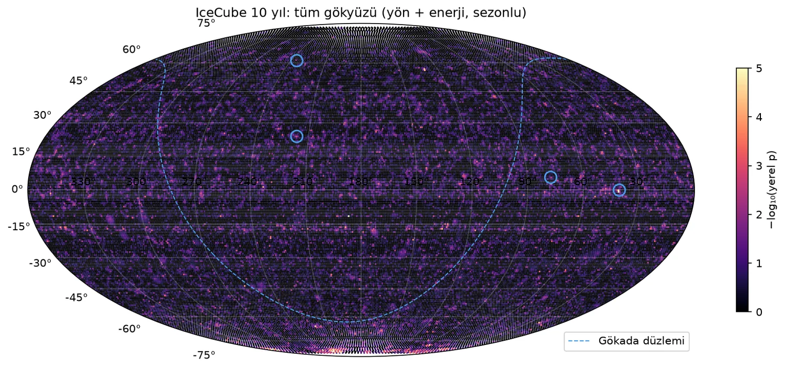
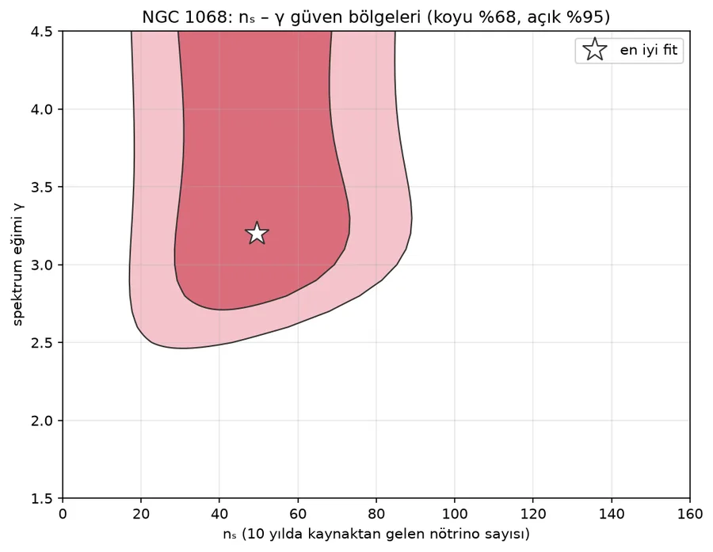
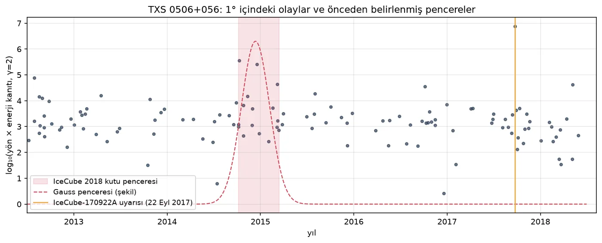
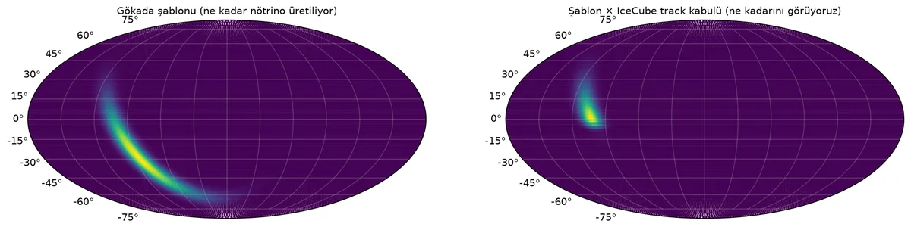

Güney Kutbu'ndaki IceCube dedektörünün halka açık verisiyle sıfırdan yazılmış bir nokta kaynak analizi. IceCube'un yayımladığı NGC 1068 ve TXS 0506+056 sonuçları bağımsız olarak yeniden üretildi.
Nötrinolar neredeyse hiçbir şeyle etkileşmez; manyetik alanda sapmaz, tozda soğurulmaz. Bu yüzden geldikleri yönü doğrudan gösterirler. IceCube, bir kilometreküp buzun içine yerleştirilmiş 5160 ışık sensöründen oluşuyor. Bir müon nötrinosu buzda etkileşince oluşan müon, arkasında mavi Çerenkov ışığından bir iz bırakıyor. Bu izden nötrinonun yönü ve enerjisi tahmin ediliyor.
On yılda yaklaşık 1,1 milyon iz kaydedildi. Bunların neredeyse tamamı atmosferde üretilen arka plan. Proje, bu yığının içinde belirli bir yöne yığılan küçük bir fazlalığı istatistik ile bulmaya çalışıyor.
Gökyüzünü kutulara bölmek yerine her olay için iki olasılık hesaplanıyor: kaynaktan gelmiş olma olasılığı (S) ve arka plandan gelmiş olma olasılığı (B). Kaynaktan gelen olay sayısı nₛ ve enerji spektrumunun eğimi γ, bu olasılıkları en iyi açıklayacak şekilde ayarlanıyor.
16° × 16°'lik sahte bir gökyüzü parçası. Ortadaki halka kaynağın yönü. nₛ'yi değiştirdikçe her olayın "kaynaktan gelmiş olma" olasılığı değişiyor: mavi olaylar kaynağa oy veriyor. Sağdaki eğri TS'nin nₛ ile nasıl değiştiğini gösteriyor; tepe noktası en iyi tahmin.
Anlamlılık için formüllere güvenmek yerine, olayların sağ açıklıkları rastgele karıştırılıp binlerce sahte gökyüzü üretildi. Gerçek TS'nin bu sahte gökyüzlerinin kaçından büyük olduğu doğrudan p-değerini veriyor. Bu olasılık genelde σ (sigma) cinsinden söyleniyor:
Alttaki satırlar aynı olasılığı yazı turayla anlatıyor: düzgün bir parayı kaç kere üst üste tura getirmek o kadar şaşırtıcı. Fizikte "keşif" demek için 5σ isteniyor.
Proje aşağıdaki sırayla ilerledi:
Gökyüzündeki her noktada likelihood uyumu yapıldı. Kuzeyin en sıcak noktası 40,87°, −0,5° koordinatında; IceCube'un 2020'de bildirdiği 40,9°, −0,3° noktasıyla neredeyse aynı yer. Gökyüzü çok yerde arandığı için bu noktanın tek başına anlamlılığı (5,4σ) yanıltıcı. Aynı tarama 100 karışık gökyüzüne de uygulandığında 2'sinde daha sıcak bir nokta bulundu; düzeltilmiş anlamlılık yaklaşık 1,9σ.

Haritada tek piksel görünen bölge burada 1° × 1°'lik bir pencerede. NGC 1068'in yanındaki dört nokta, kaynak konumunun 0,2° kaydırıldığı testler; yanlarındaki sayılar o konumda bulunan anlamlılık.
Konum en sıcak noktaya doğru kaydırılınca anlamlılık 4,3–4,4σ'ya çıkıyor, ters yöne kaydırılınca 2,8–3,3σ'ya düşüyor. Sağlamlık bölümündeki konum duyarlılığının nedeni bu.
Hiç kaynak olmayan, tamamen rastgele 2000 gökyüzü. Her gökyüzünde kaç noktaya baktığını sen seç. Grafik, her gökyüzündeki en parlak noktanın yerel anlamlılığını gösteriyor.
Gerçek taramada da aynısı oldu. Kuzeyin en sıcak noktası tek başına 5,4σ; ama aynı tarama karışık gökyüzlerinde de yapılınca 100 gökyüzünün 2'sinde daha sıcak bir nokta çıktı. Düzeltilmiş anlamlılık bu yüzden yaklaşık 1,9σ. NGC 1068'in 3,9σ'sı ise geçerli, çünkü o kaynak taramadan önce seçilmişti.
Önceden seçilmiş NGC 1068 yönünde en iyi uyum nₛ = 49,6 olay ve γ = 3,2. IceCube'un 2020 sonucu nₛ = 50,4, γ = 3,2. Yerel anlamlılık 3,94σ.
Dik bir spektrum (γ ≈ 3) gama ışınlarında parlak olmayan, yoğun bir çekirdekten gelen nötrinolarla uyumlu. IceCube 2022'de daha iyi işlenmiş veriyle bu kaynağı 4,2σ ile ilan etti.

2017'de IceCube-170922A olayı bu blazara işaret edince IceCube eski veriye döndü ve 2014–15'te yaklaşık 5 ay süren bir nötrino patlaması buldu. Aynı zaman penceresi bu projede önceden sabitlenip test edildi: nₛ ≈ 11, γ = 2,3, kutu pencerede 4,1σ. Makaledeki değerler nₛ = 13 ± 5, γ = 2,1 ± 0,2.

| Analiz | Bu proje | IceCube |
|---|---|---|
| NGC 1068 · nₛ / γPRL 124, 051103 (2020) | 49,6 / 3,2 | 50,4 / 3,2 |
| NGC 1068 · yerel anlamlılık | 3,94σ | ≈4,1σ |
| Kuzey en sıcak nokta (RA, Dec) | 40,87°, −0,5° | 40,9°, −0,3° |
| En sıcak nokta · yerel / düzeltilmiş | 5,40σ / ≈1,9σ | 4,96σ / 1,29σ |
| TXS 0506+056 2014–15 patlamasıScience 361, 147 (2018) | 4,1σ · γ 2,3 · nₛ ≈ 11 | 3,5σ · γ 2,1 · nₛ 13 |
| Güney gökyüzü taraması | sıfır sonuçtutarlı | sıfır sonuç |
| Gökada düzlemi, iz olaylarıScience 380, 1338 (2023) | 0,44σtutarlı | izlerde sıfır; kaskadlarla 4,5σ |
Olay penceresi, arka plan histogramı, enerji binleri ve açısal hata ölçeği değiştirildiğinde NGC 1068 3,85–4,2σ arasında kalıyor. Kaynak konumu 0,2° kaydırıldığında ise 2,8–4,4σ arasında oynuyor. Bunun nedeni en sıcak noktanın NGC 1068'den yaklaşık 0,5° uzakta olması; analizin en büyük sistematik belirsizliği bu.
Güneyin en sıcak noktası (Dec −81,5°) tek başına 5σ gibi görünüyor ama 50 karışık gökyüzünün 27'sinde daha sıcak bir nokta var. Düzeltilmiş anlamlılık yaklaşık 0σ. Nokta güney kutbu kenarında ve kenar etkisi olarak yorumlandı.
Samanyolu düzlemi boyunca yaygın bir şablon test edildi. Sonuç sıfır. Bu beklenen bir durum: düzlemin parlak kısmı güney gökyüzünde ve iz olayları orada zayıf. IceCube düzlemi 2023'te kaskad olaylarıyla gördü.
